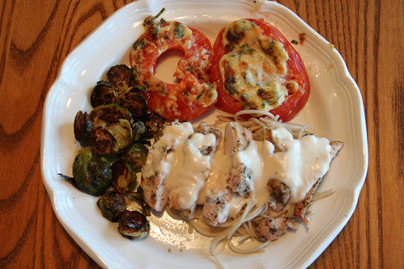
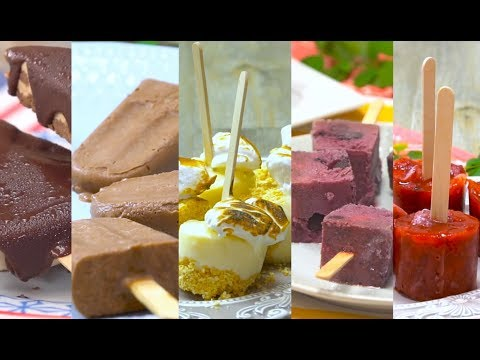
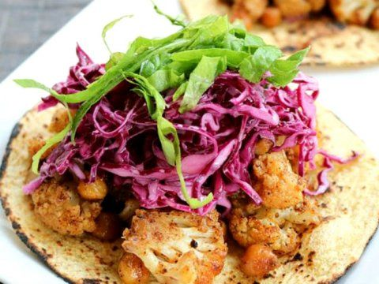

Recetas de comidas deliciosas para todos los días.
Home
Privacy policy
Terms and Conditions
Photo gallery
Contacts
Photo gallery
Posted by
Someone
2021.06.24 13:46 •
Comments (64)
•
Full article


Blog
About
Categories
Recetas caseras fáciles para tu menú semanal 001 - Cocina .
Recetas para cada día, ¡elabora tu menú diario!
25 recetas reconfortantes y sanas para entrar en calor los días .
31 recetas rápidas y fáciles para no complicarse la vida en un .
Menu para la semana - Recetas y Postres - Y hoy qué comemos
Comidas económicas: 14 opciones fáciles y ricas para cenar .
10 recetas faciles de cocinar y sobrevivir en casa al coronavirus
33 recetas para el día a día con las que la familia te hará la ola
15 recetas fáciles y económicas para varios días - Cocina .
Te proponemos 15 recetas fáciles para no complicarte en la .
Photo #1

Menu
Recetas caseras fáciles para tu menú semanal 001 - Cocina .
Recetas para cada día, ¡elabora tu menú diario!
25 recetas reconfortantes y sanas para entrar en calor los días .
31 recetas rápidas y fáciles para no complicarse la vida en un .
Menu para la semana - Recetas y Postres - Y hoy qué comemos
Comidas económicas: 14 opciones fáciles y ricas para cenar .
10 recetas faciles de cocinar y sobrevivir en casa al coronavirus
33 recetas para el día a día con las que la familia te hará la ola
15 recetas fáciles y económicas para varios días - Cocina .
Te proponemos 15 recetas fáciles para no complicarte en la .